Oct 09 Fri 2015 【微風廣場美食】忠孝復興站 / 江原慶白菜韓國料理，八色烤肉初體驗
自從幾年前常吃的某間韓國料理店老闆搬回韓國不營業後，我就很少吃韓國菜。前陣子看韓劇「一起吃飯吧」，被劇中一道道看起來超美味的韓國料理吸引，FB又整天看到朋友去吃超夯的「八色烤肉」，這天終於一償我想吃韓國料理的願望，到新開的「江原慶白菜」品嚐各式韓國料理了。 微風廣場G樓的「江原慶白菜」韓國餐廳是這個品牌的二號店，一號店七月份在台中豐原開幕，微風的這間也才開幕沒多久。
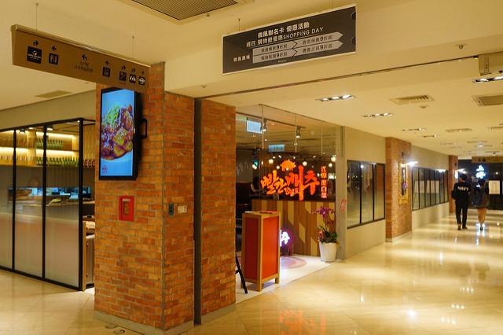餐廳雖然才開幕不久，可是我不到七點去用餐，已經是客滿的狀態，還好有事先預約。另外沒預約的兩組客人得等上半小時以上才有位，建議大家一定要先訂位，才不用久候啊！
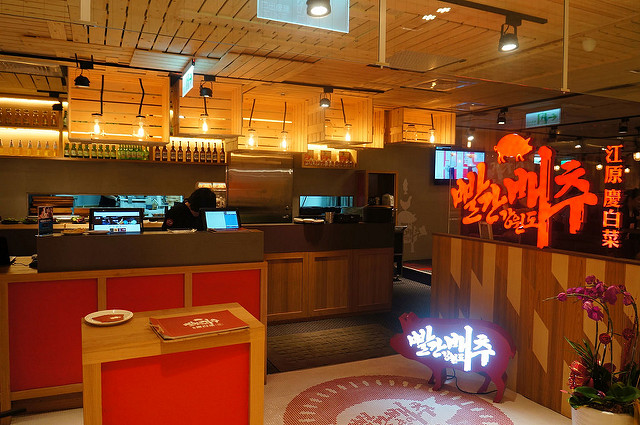餐廳的設計都是沙發座，很適合聚餐，還有好幾台液晶螢幕在放Kpop的MV。(因為用餐時客人太多，這是我們吃完要離開的時候補拍的)
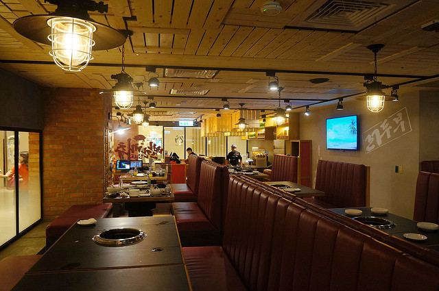 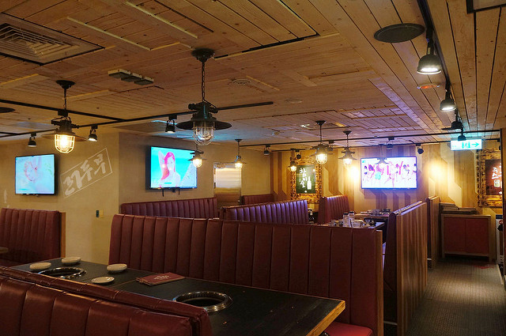 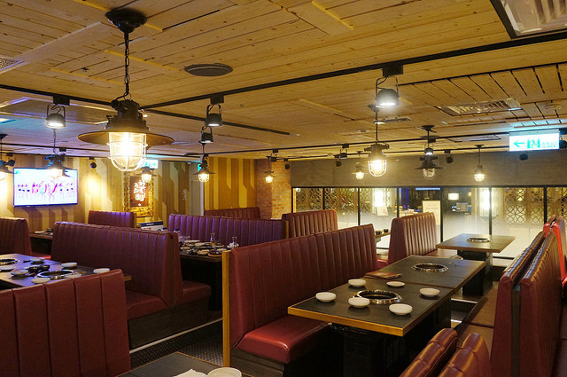在韓國跟台灣掀起一陣旋風的八色烤肉這裡也有賣，和另一間韓國正宗八色烤肉的口味大致一樣，只差松葉口味變成了青醬口味。
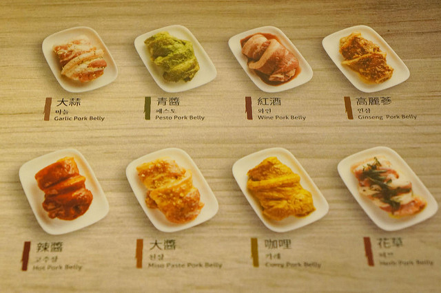這裡的菜單有配好的雙人、三人套餐，也有肉類、海鮮、蔬菜、熟食可以單點。雙人套餐價位1480元~1880元，三人套餐則是2380元。( 圖片為慶生三人套餐內容 )
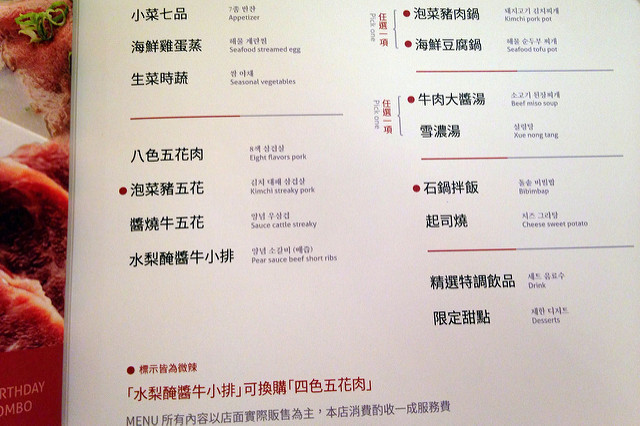吃韓國料理讓人很期待的就是有好多小菜可以吃，江原慶白菜的套餐都附小菜七品，內容每天不大一樣，吃完可以無限續。因為我跟老公不敢吃蒜，擔心小菜都有蒜味，還好只有泡菜的蒜味很重，交給敢吃蒜的媽咪解決，其他的我們都敢吃，其中以豆芽菜和百香果青木瓜最推薦，續盤還是一下子就吃光。
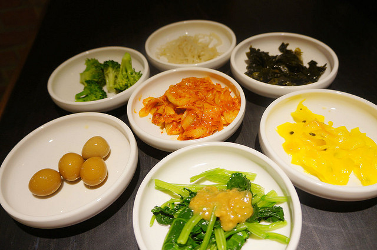因為點的是三人套餐，所以有三杯芒果冰沙。
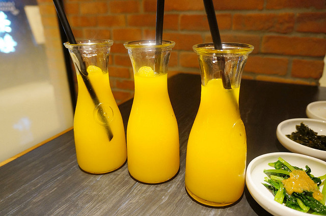雪濃湯
乳白色的雪濃湯是用牛骨和牛肉熬煮而成，裡面有好幾片牛肉片，因為一下子太多食物上桌，又要拍，又要烤肉，一陣兵荒馬亂的，等喝的時候湯已經有點涼掉了，很可惜。
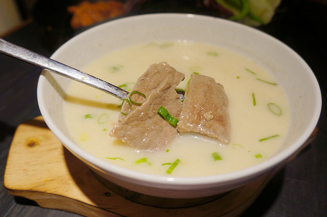石鍋拌飯
套餐裡的石鍋拌飯比外面一般的石鍋拌飯迷你些，飯的上面鋪了泡菜、蔬菜、一顆生雞蛋和海苔絲。雖然辣醬稍嫌多，拌勻後吃起來有點濕，但放久一點，有鍋巴的地方很香，三個人分食，一會兒就吃完了。
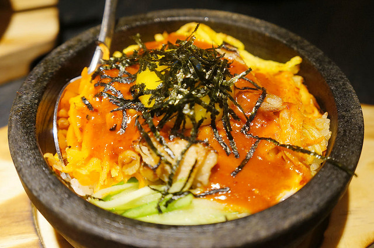海鮮雞蛋蒸
第一次吃韓國的雞蛋蒸，看起來和表面光滑的日式蒸蛋很不一樣，表面有不少氣孔，口感比較紮實粗獷，裡面的海鮮也不少。
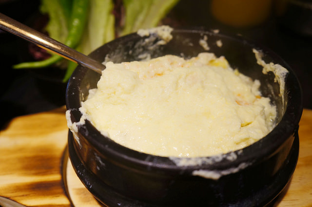 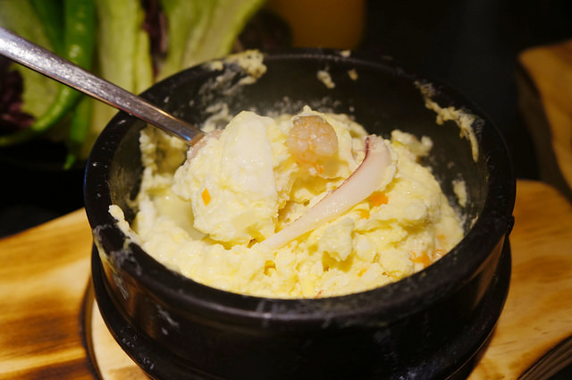海鮮豆腐鍋
海鮮豆腐鍋裡的料很豐富，除了豆腐，還有蛤蜊、花枝、蝦子、菇類。不知是不是豆腐太嫩了，基本上看不到整塊的豆腐，都是碎碎的，有點像豆花的感覺，吃起來很滑嫩，和之前吃過的海鮮豆腐鍋很不一樣。湯裡因為加了韓國大醬，味道比較特別，老公吃不大習慣，我倒是覺得還不錯。
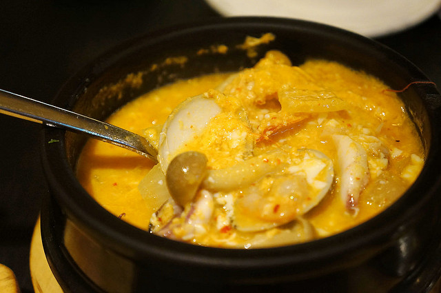由左到右分別是極上松阪豬、水梨醃醬牛小排、泡菜豬五花和生菜時蔬，其中的松阪豬不在套餐裡，是起士燒沒了，所以換成松阪豬。生菜時蔬份量不多，如果喜歡用菜包著烤肉一起吃一定會不夠，建議加點要早點說，我們20:40說要加點，廚房已經收了，所以無法加點。TAT
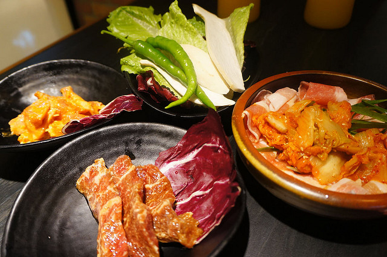一開始我們把泡菜豬五花裡的五花肉一片片放下去烤，服務人員看到後告訴我們正確烤法是整盤倒下去烤。
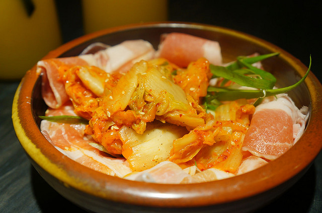這種烤法果然輕鬆很多，而且肉會更有味道。旁邊一塊塊的是極上松阪豬，吃起來Q脆有彈性，只可惜我們烤肉技術太差，好像沒有沒烤焦的。
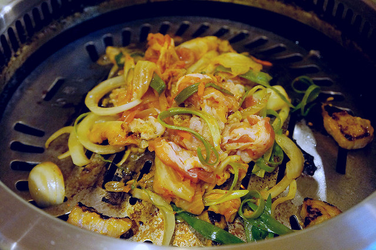泡菜豬五花調味調得很不錯，單吃或用生菜包著都好吃，只可惜有些地方被我們烤焦了。
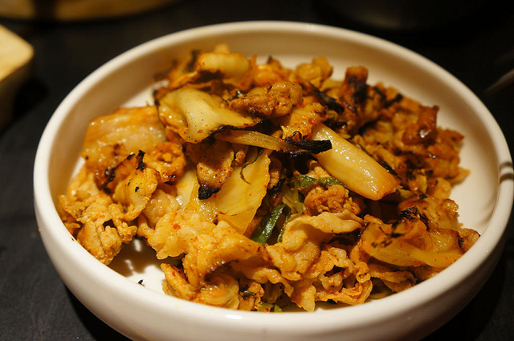醬燒牛五花
牛五花肉切得很薄，沾點醬汁再放到烤盤上烤，烤幾秒鐘再翻面烤一下就可以吃了。吃起來很像牛丼上面的牛肉，甜甜鹹鹹的，好想點一碗白飯來配啊！
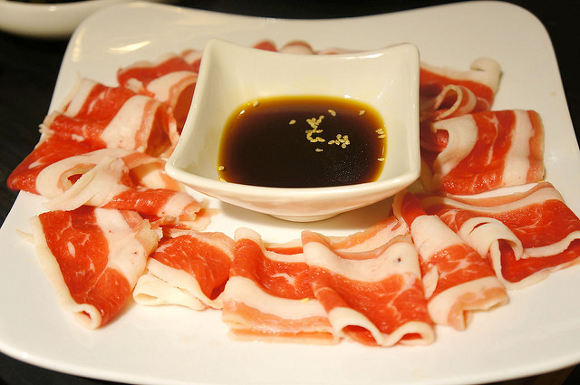 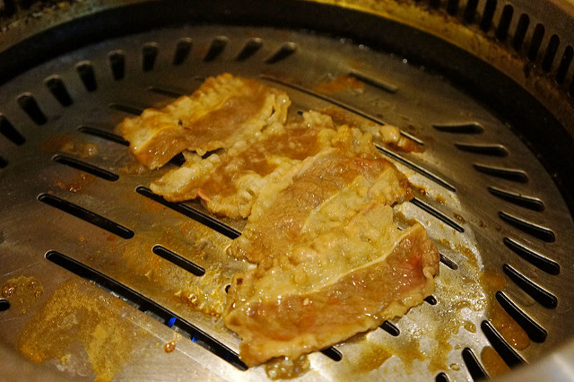水梨醬醃牛小排
牛小排吃起來很嫩，因為已經醃過醬料，不需要另外沾醬就很入味。
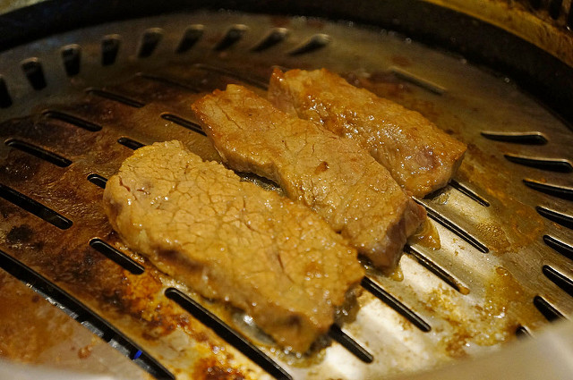重頭戲的八色五花肉上桌了，看起來份量好多啊！
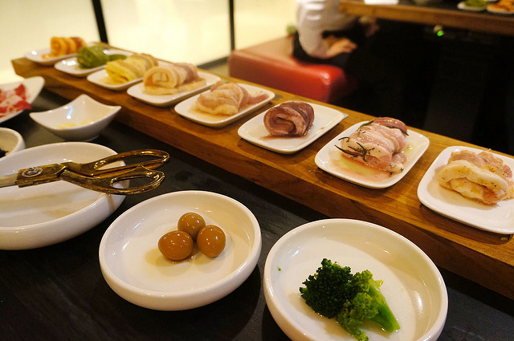韓國料理的碟子、盤子有夠多，雖然桌子很大，但還是要把一些東西清理一下，才放得下這一大盤八色烤肉。口味由左到右依序是人蔘、花草、紅酒、大蒜、大醬、咖哩、青醬、辣醬，烤的時候要從味道最淡的開始烤，也就是從人蔘依序往右烤。
因為沒吃過八色烤肉，不大知道該如何烤起，還好服務人員主動過來幫我們烤肉，解救了無助的我們。服務人員一次放了四片五花肉到烤盤，稍微翻一下後就一直放著。
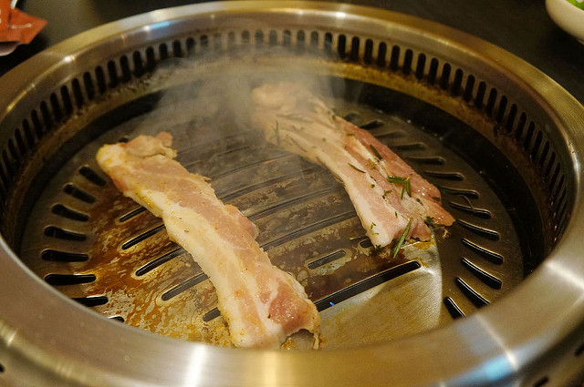過了幾分鐘後就烤好了，很神奇的是都沒有燒焦，跟我們烤的松阪豬、豬五花差很多。
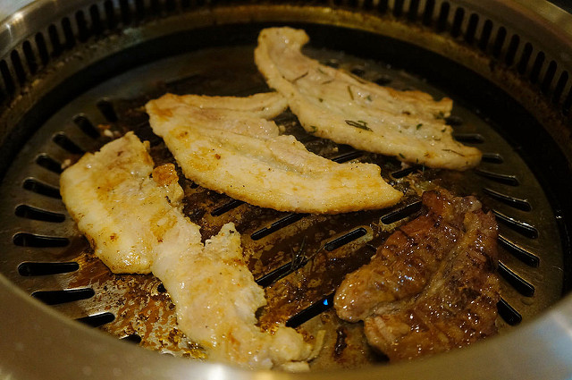烤好之後服務人員會再過來幫我們剪肉。
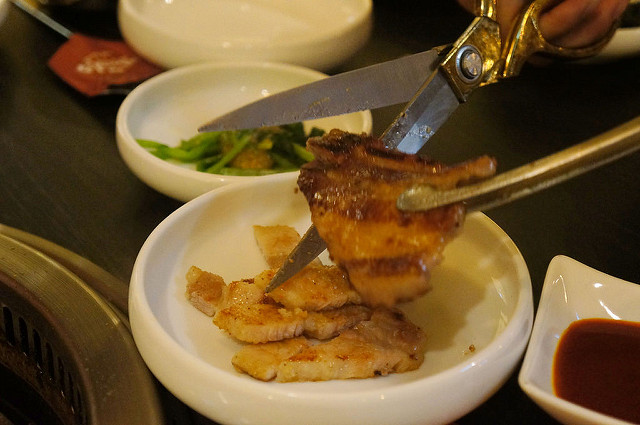八色烤肉因為都用醬料醃過，其實不用沾醬，不過老公喜歡吃辣，所以還是沾了點辣醬一起吃。前面四種豬肉的調味雖然較淡，但都吃得出來是哪種口味。
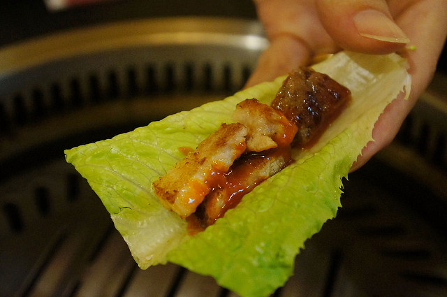我們自己試著烤了一片五花肉後，看到服務人員有空，又請服務人員來幫我們烤肉，這一次烤的是口味最重的三種五花肉。
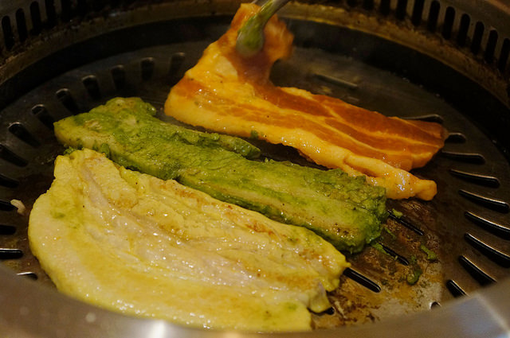這位服務人員的做法跟前一位不同，大概烤到八分熟的時候就開始剪肉然後放在烤盤四周沒那麼燙的地方，這種吃法就算吃到最後，肉也還是熱的，我覺得很不錯。這些五花肉看起來雖然挺肥的，不過烤的時候把油逼了出來，吃起來脆脆的，不會有油膩感，其中的青醬口味吃起來很神奇，有種在吃義大利麵的fu。個人比較喜歡口味較重的大醬和辣醬豬肉。
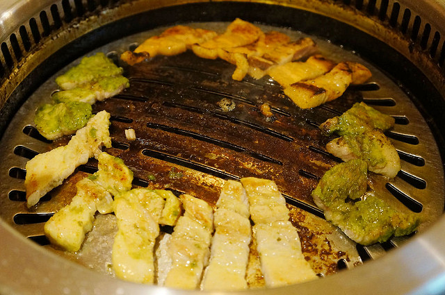最後的甜點是芋頭冰淇淋跟起士蛋糕，蛋糕的起士味很濃，冰淇淋吃起來像是變軟的芋頭冰磚，很有古早味。
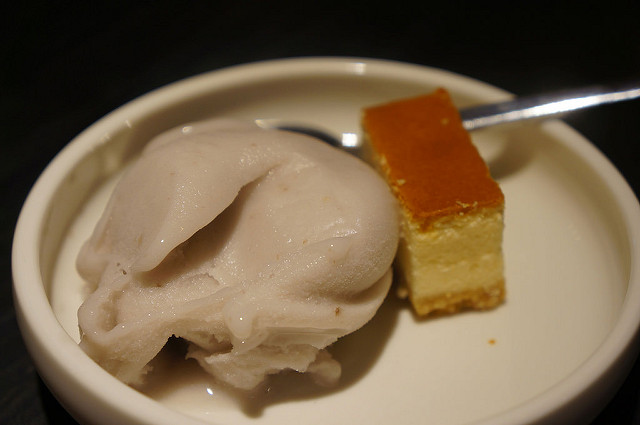整體來說，這裏的服務人員態度很好，不但幫我們烤肉、剪肉做桌邊服務，還一直換烤盤。只是服務人員相較於客滿時的客人人數真的是少了點，有時候每個服務人員都好忙，所以有什麼需要會要稍等一會兒。但對於他們在這麼忙的情況，還都一直保持笑容，我給予很不錯的評價。 食物方面，這次吃到蠻多以前沒吃過的東西，感覺很新鮮。只是這個三人套餐的份量實在很多，尤其是肉超多，除了份量很夠的八色豬五花，還有泡菜豬五花、牛五花、牛小排跟代替起士燒的松阪豬，如果胃口小的女生，4~5人吃應該差不多。平常肉吃比較少的媽咪跟我，感覺這一餐吃了一星期份量的肉。三個人的話建議點兩人套餐就好，吃不夠再加點其他菜色就好。
※ 感謝江原慶白菜韓國餐廳邀約試吃，本文為真心分享文 ※
台北微風店
台北市松山區復興南路一段39號G樓（微風廣場GF）
TEL：8772-6970
營業時間：週日~週三 11:00 ~ 21:30 / 週四~週六 11:00 ~ 22:00
台中豐原店
台中縣豐原市復興路2號B2（豐原太平洋B2）
TEL：(04) 2512-3099
營業時間：平日 11:00～20:00 / 假日 10:30～22:00